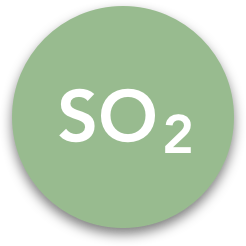
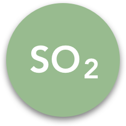
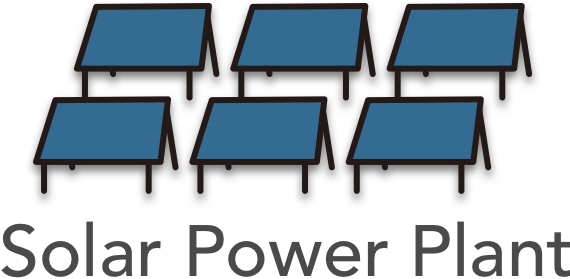
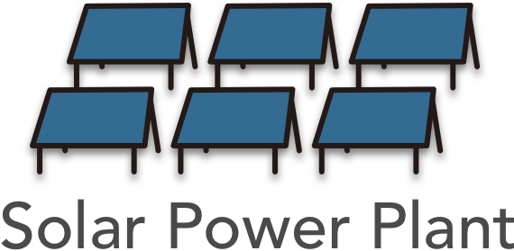

*Carbon Dioxide - eq

*Nitrogen Oxide
*Particulate Matter

*Sulfur Dioxide
Q: What energy sources are used to power your lights, computers, microwave, etc.?
Why does this matter?
1. Air Pollutants 2. Greenhouse Gase
*Carbon Dioxide - eq
*Nitrogen Oxide
*Particulate Matter
*Sulfur Dioxide
To compare electrical energy sources, we will use a life cycle analysis approach. The impacts of an energy source are assessed not just when it is generating electricity but also the impacts associated with extraction of raw materials, construction of the power plant, running the power plant, and dismantling the power plant.
We will compare each energy source using the following metrics:
•GHG emissions factor[?]
•Air pollutant emissions[?]
•Capacity factor[?]
•Land Use factor[?]
These are not the only metrics of comparison but will allow us to objectively evaluate each energy source. These are also metrics often debated by policy makes and in the news media. Further, understanding these metrics will allow us to ask what other metrics should be included in these discussions. The current electrical energy portfolio of the U.S.in 2018 is shown above. Compare the different metrics of each energy sources:
 


After reviewing the comparison data for each of these metrics, consider these questions:
Which electrical energy source is “cleaner”? How are you defining “cleaner”?
Are any electrical energy sources truly “zero-emission”?
What electrical energy portfolio would you recommend to lower emissions of air pollutants and GHGs?
How might capacity factor and power density play a role in your recommended electrical energy portfolio?
Is there a “perfect” energy portfolio which rates highly on all four metrics?
Below we focus on the relative external costs for five states in the US based on these states’ electrical energy portfolios and emissions of air pollutants and GHGs.

What is the electrical energy portfolio of your state? Click here. Based on what you have learned about electrical energy sources, compare the hidden cost of your state’s electrical energy portfolio to one of the five states shown here.
If you could make recommendations to your local or state representative, what would you recommend and why?
What is the role of environmental regulations in lowering emissions of air pollutants and GHGs?
Do these regulations work? Are they cost-effective?
Public outcry triggered by smog in cities like Donora, Los Angeles, and New York City, where people could “feel” and “taste” the air they were breathing in, triggered Congressional action and the passing of the 1970 Clean Air Act (CAA). This Act, and subsequent amendments, regulates the levels of six air pollutants. Since the passing of the Clean Air Act the air quality in the U.S. has improved.
As can be seen below, the levels of air pollutants - sulfur dioxide (SO2), nitrogen oxides (NOx) and particulate matter (PM2.5, PM10) have all been reduced. A major source for all of these air pollutants are electrical power plants.
insert timeline here
While the air in the U.S. is “cleaner” today compared to 1970, over 100 million people in the U.S. live in areas which struggle to meet one or more of these mandatory air quality standards. Cities in states like California and Texas still struggle with smog.
It is also important to note that while levels of air pollutants have decrease because of the CAA, levels of GHGs have not declined. Some states have adopted targets to reduce emissions of GHGs.
Imagine if there are federal limits to emissions of GHGs. How much more money could be saved by lowering the hidden costs of GHG emissions?
Q: Are the “cost” of regulations higher than the “benefits”?
It is often raised that environmental regulations are expensive and whether or not the "benefits" of regulations outweigh the "costs". In the case of the CAA the answer : benefits far outweighs the costs.
As a result of the passing of the 1970 CAA and amendments, air quality in the U.S. has improved, significantly lowering the “external cost” of air pollutants as a result of less damage to human and ecosystem health. Some studies suggest for every $1 invested in regulations to improve air quality, $40 was returned to the U.S. economy resulting in savings of trillions of dollars.
Q: What should we do about our electrical energy portfolios?
If you could decide what a city like New York should do to shift towards cleaner energy sources – what will you decide? and why?